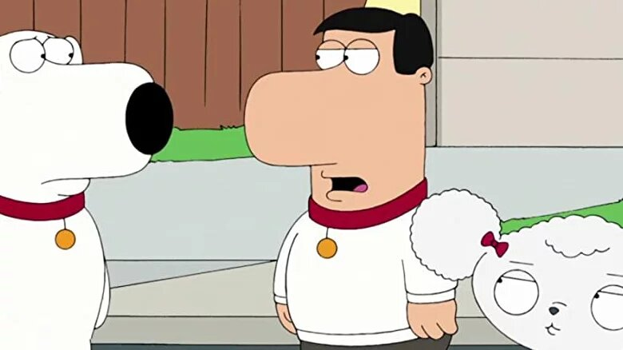
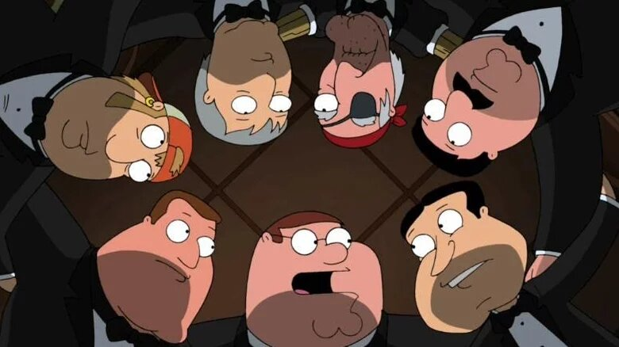

FUNNIEST EPISODES
-
 1. Road to the Multiverse (Season 8, Episode 1) Summary: Brian and Stewie go on another road trip through alternate universes using a special remote control. Including a post-apocalyptic world, a parallel world run by dogs where humans are pets, and the Robot Chicken universe.
-
 2. And Then There Were Fewer (Season 9, Episode 1) Summary: The town of Quahog is invited to a mansion for a weekend getaway. When some murders happen, it turns into a real life murder mystery.
-
3.The Simpsons Guy (Season 13, Episode 1). Summary: The Griffins go on a road trip and wind up in Springfield where they meet the Simpsons. Stewie becomes fascinated with Bart's pranks, Lois bonds with Marge, Meg is taken under Lisa's wing and Peter argues with Homer over which brand of beer is best - Pawtucket or Duff.